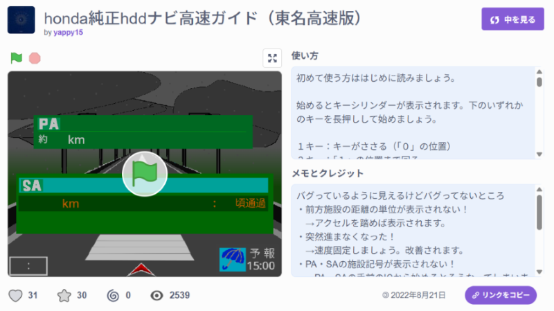
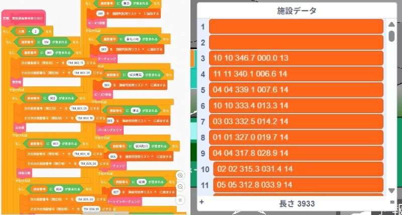
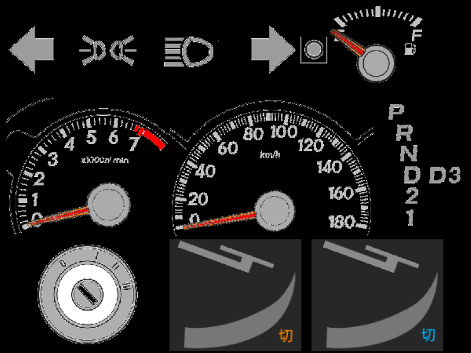
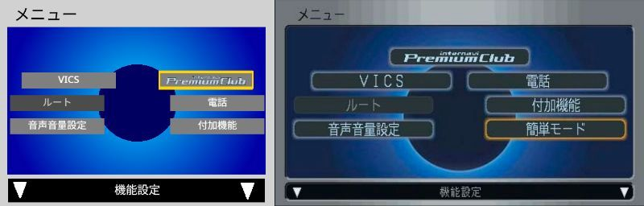
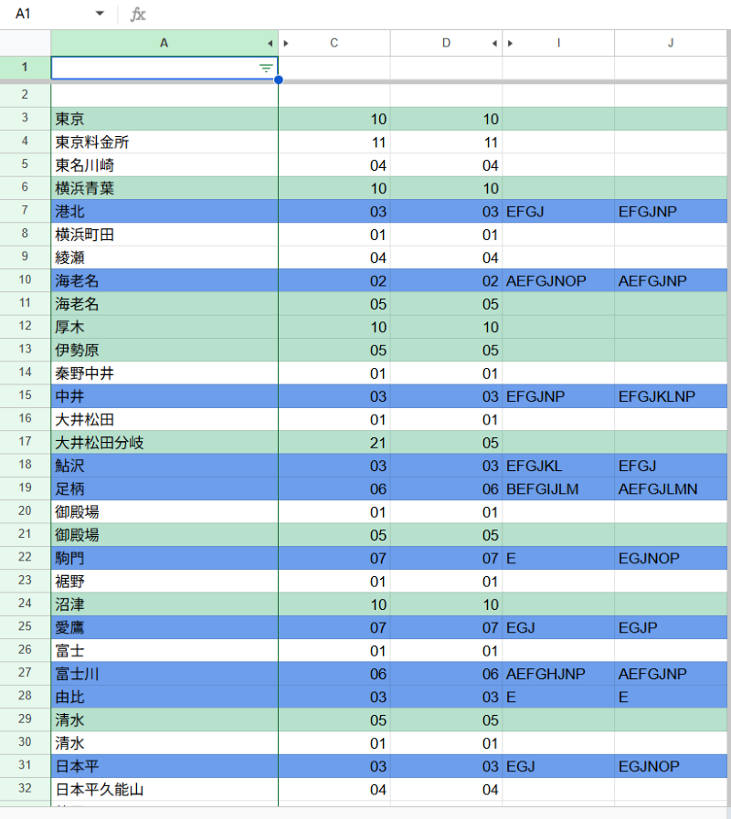
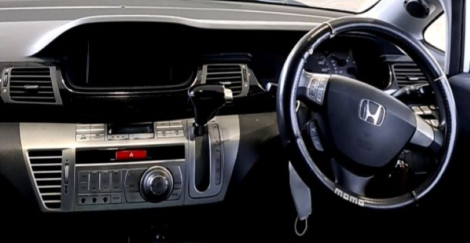

プログラミング
私が作っているカーナビゲーションシステムのプログラムのご紹介
基本情報
プログラムを作りたくなった経緯
私の父の乗っている自動車に搭載のカーナビゲーションシステムに心奪われて自宅でも遊べるようにしたいと思いスクラッチで作成を開始。
2022年の夏に試作版として東名高速の地図データのみを搭載したものを公開。

現在行っていること
試作版から全国版に範囲を広げるためにブロックによる地図データ制御からリストによる地図データ制御に変更。
それによりプログラム自体のデータの軽量化に成功。かつ膨大なデータの処理にも成功。

ブロック制御だったのに対しリストから読み込む制御に進化。
さらにナビ動作の要である自動車側の操作を3種類のキーを使い一定速度の加速・減速のみの簡素な物からアクセルペダル、ブレーキペダルが実装、細かな加減速の調整が可能になるよう大幅な変更を施した。
アクセルの踏み込みは6段階、ブレーキの踏み込みは9段階になりより本格的な運転を実現。
さらにシフトレバーや燃料計等が実装。シフトレバーは実際の動きと同じような動きをし、燃料計は走行環境に応じて減少。

また今作は新しく本物そっくりのメニュー画面が実装。
より本物に近い機能と動きを兼ね備えたプログラムに進化。

スクラッチ版では項目が減っているが再現しきれない、要らない項目は消してあります
現在は地図データの書き込みは完全に完了。接続道路の認識も正確なものになり今は休憩施設の施設情報を書き込んでいる。
なお完璧に完成して公開するのはまだ先になりそうだ。

公開中の試作品のプログラム
※スマートフォンからの操作は非対応です。予めご了承ください。
操作方法
全てキーボードによる操作に依存します。
① 緑色の旗を押すと開始されます。
② 鍵穴が表示されるので4キーを長押ししてエンジンをかけましょう。
③ ホンダナビゲーションが表示された後選択画面が出てくるので黄色い枠（以降「カーソル」と表記）を右に動かしましょう。
※カーソルの動かし方について
カーソルを動かすにはJキーの周りのキー（U,I,K,M,N,H）に割り当てられています。6つのキーのどれかを最初に押し、カーソルを回したい方向に順番に押すことで回ります。
※右回り（時計回り）に動かす際に押す順番の例：I→K→M→N→H→U→I→K…
※左回り（反時計回り）に動かす際に押す順番の例：I→U→H→N→M→K→I→U…
④ カーソルを「ICリストから」に合わせたらJキーを押して決定します。※それ以外の項目で決定を押しても先には進みません。ご了承ください。
⑤ 画面が進んだらカーソルを「路線リストから」に合わせ、Jキー（以降「決定」と表記）を押します。※もう片方を選択しても先には進みません。ご了承ください。
⑥ 選択肢が「東名高速」しかないのでそのまま決定します。
⑦ カーソルを動かし、好きな施設に合わせ、決定を押します。
⑧ 上下線が選択できるので好きな方向にカーソルを合わせ、決定を押します。
⑨ 高速ガイドが表示されます。
高速ガイド表示後の操作方法
この後は3種類のキーしか押しません。
スペースキーで加速
Vキーで減速
Cキーで速度が固定されます
ただ、どこかのキーを押すと40km/hになるとかならないとか…w
ちなみにＡキーを押すと天気情報が表示されるとか
※ここで表示される気象情報は2021年7月から2022年6月までの気象庁のデータを参照にしており、実際の気象情報とは異なります。
正しい終わらせ方
まぁ画面左上の赤いボタンを押せば終わるには終わるけどｗ
一応正しい終わらせ方もあるから教えます。
①
- 手前の施設が「ＰＡ」「ＳＡ」を示していること
- その施設の残り距離が「施設付近」と表示されていること
- 時計の隣にあるデジタルスピードメーターが「０」を示していること
② ①の条件が全て揃った状態で5キーを押す。※全て揃っていない場合メッセージが表示されます。
③ 鍵が表示されるので1キーを押して鍵を0の位置に合わせる
④ 自動的にプログラムが終了します。
軽く宣伝
公式サイトなら大画面で遊ぶこともできます。こちらからアクセス！
参考にしたカーナビゲーションシステムの画像

ホンダ エディックス（2004-2009）